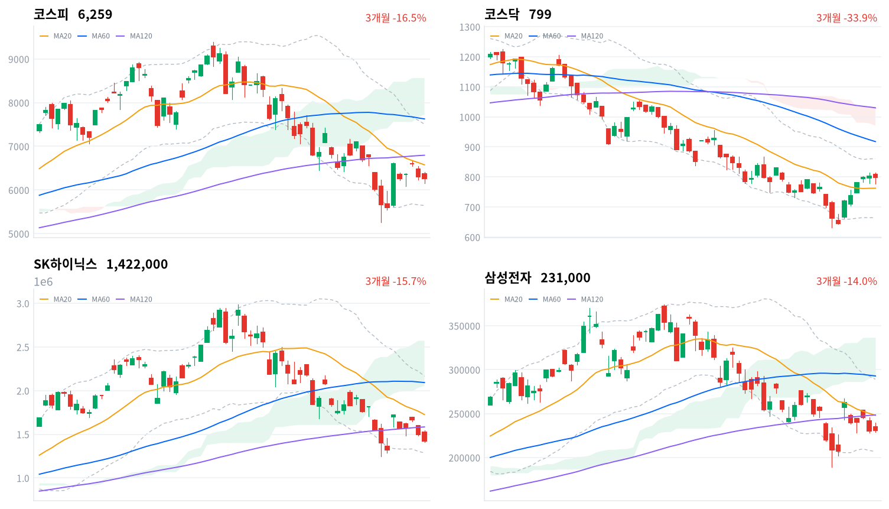
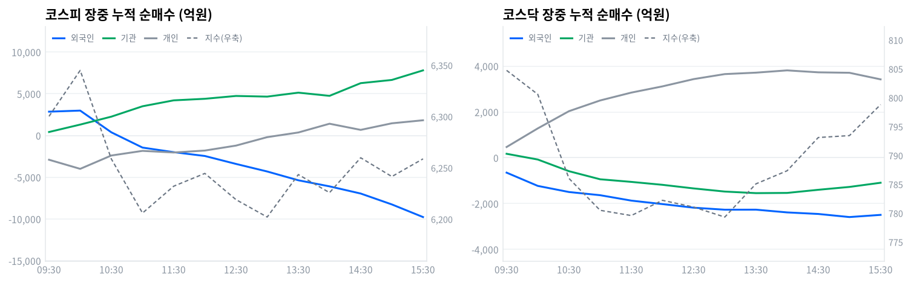

동인 간밤 뉴욕 증시에서 엔비디아의 차세대 GPU 메모리 탑재량 축소 검토설과 AMD·샌디스크의 실적 가이던스 실망이 반도체주를 끌어내린 여진이 7일 국내 증시로 이어졌다. SK하이닉스가 5%대 약세를 보이며 코스피 하락을 주도했고, 코스피는 전일 종가(6,296.38포인트) 대비 갭업 출발해 장 초반 6,415.60포인트까지 올랐다가 이내 낙폭을 키워 -0.60%(6,258.77포인트)로 마감, 주간 기준 7주 연속 하락을 기록했다(2022년 12월 이후 최장). 삼성전자는 강보합 마감하며 SK하이닉스와 디커플링을 보였고, 반도체 대형주 비중이 낮은 코스닥은 -0.36%(798.81포인트)로 상대적으로 선방했다.
크로스에셋·수급 정합성 외국인은 코스피에서 8,588억원(당일 잠정) 순매도했으나 전일(3조2,893억원)에 비하면 매도 규모가 큰 폭으로 줄었고, 기관은 5,791억원 순매수로 전환해 최근 며칠 새 가장 큰 순매수를 기록했다 — 개인(+2,675억원)까지 더하면 외국인만 홀로 매도한 하루였던 셈이다. 그럼에도 지수가 하락한 것은 매도가 SK하이닉스(거래대금 1위, 6.94조원) 등 반도체 대형주에 쏠렸기 때문으로 풀이된다. 반면 한화솔루션은 미국의 폴리실리콘·태양광 관세 부과 소식에 거래대금 4위(0.69조원)로 뛰어올랐고, 화학(+3.98%, breadth 0.724)·석유와가스(+4.41%, breadth 0.579) 업종이 나란히 '폭넓은 상승 주도'로 분류돼 관세 수혜 기대가 종목을 넘어 업종 전반으로 퍼졌음을 확인해준다. 국고채 10년물(4.208%, +1.3bp)은 소폭 올랐지만 원/달러 환율은 오히려 1,416.1원으로 7.7원 하락(원화 강세)해, 외국인의 주식 순매도와 환율 방향이 곧바로 맞물리지는 않는다는 점은 확인이 필요하다.
다음 촉매·확인 트리거 기술적으로 코스피는 20일선(6,574.78포인트)은 물론 일목균형표 구름대(7,724.91~8,561.66포인트)까지 밑도는 상태라, 20일선 회복 여부가 1차 확인 트리거다. 코스닥은 20일선(762.53포인트)을 4.76% 웃돌지만 60일선(917.60포인트) 아래 역배열이 이어지고 있어 볼린저 상단(860.70포인트) 돌파가 다음 관전 포인트다. 대외적으로는 8월11일 반도체특별법 시행, 8월27일 한은 금통위가 다음 분기점이라 그 전까지는 반도체 대형주 중심의 변동성과 태양광 관세 수혜주 순환매가 동시에 이어질 공산이 크다.
| 지수 | 종가 | 등락률 | 일중 고가 | 일중 저가 |
|---|---|---|---|---|
| 코스피 | 6,258.77 | -0.60% | 6,415.60 | 6,158.73 |
| 코스닥 | 798.81 | -0.36% | 814.80 | 776.60 |
코스피는 전일 종가(6,296.38포인트) 대비 갭업 출발한 6,365.07포인트에서 시작해 장 초반 일중 고점 6,415.60포인트까지 올랐지만 이내 하락 전환했다. 30분봉 기준 09시30분 6,300.16포인트로 밀렸다가 10시00분 6,344.94포인트로 한 차례 반등했고, 이후 11시00분 6,205.91포인트까지 낙폭을 키웠다. 일중 저점은 6,158.73포인트였다. 오후에는 6,200~6,260포인트 범위에서 등락을 거듭하다 14시30분 6,259.78포인트까지 반등한 뒤 소폭 되밀리며 6,258.77포인트(-0.60%)로 마감했다.
코스닥도 전일 종가(801.67포인트) 대비 갭업 출발한 807.62포인트에서 시작해 장 초반 일중 고점 814.80포인트까지 올랐으나 코스피와 함께 하락 전환했다. 30분봉 기준 10시30분 786.02포인트, 11시00분~11시30분 780.49~779.58포인트까지 밀렸고 이 무렵 일중 저점 776.60포인트를 형성했다. 이후 낙폭을 서서히 만회해 14시00분 787.34포인트, 14시30분 793.10포인트, 15시00분 793.43포인트로 꾸준히 올라서며 798.81포인트(-0.36%)로 마감해 코스피보다 선방했다.
이 하락의 트리거는 간밤 뉴욕 증시에서 엔비디아의 차세대 GPU 메모리 탑재량 축소 검토설과 AMD·샌디스크의 실적 가이던스 실망이 반도체 관련주를 끌어내린 여진이었다(이투데이·파이낸셜뉴스 보도). SK하이닉스는 이 여파로 5%대 약세를 보이며 코스피 하락을 주도했고, SK하이닉스 ADR도 간밤 급락한 것으로 전해진다. 다만 낙폭은 반도체 대형주에 집중됐고 화학·석유와가스 등 미국 태양광 관세 수혜 업종은 오히려 강세를 보이는 등 업종별 온도차가 뚜렷했다.

코스피 코스피는 6,258.77포인트로 마감해 20일선(6,574.78포인트)·60일선(7,625.71포인트)·120일선(6,794.19포인트)을 모두 밑도는 혼조 배열이고, 20일선 대비 이격도는 -4.81%다. 볼린저밴드(20,2σ) %b는 0.33으로 중심선과 하단 사이에 위치하며, 일목균형표 구름대(7,724.91~8,561.66포인트) 아래에서 전환선(5,968.72포인트)은 웃돌지만 기준선(6,795.01포인트)은 밑돈다. 반등 시나리오는 20일선(6,574.78포인트) 회복이 1차 트리거로, 이를 넘으면 120일선(6,794.19포인트)·기준선(6,795.01포인트)이 순차 저항으로 남는다. 반대로 밀리면 볼린저 하단(5,643.71포인트)을 거쳐 20·60일 저점(5,262.77포인트)이 최후 지지선이다.
코스닥 코스닥은 798.81포인트로 20일선(762.53포인트)은 4.76% 웃돌지만 60일선(917.60포인트)·120일선(1,029.95포인트)은 밑도는 역배열 구조다. 볼린저 %b는 0.685로 상단에 가까워 단기 과열 부담이 있고, 일목균형표 구름대(970.90~1,033.98포인트) 아래에서 전환선(722.89포인트)·기준선(767.76포인트)은 모두 상회했다. 상승 시나리오는 볼린저 상단(860.70포인트)과 20일 고점(867.38포인트) 돌파가 트리거로, 이를 넘으면 60일선(917.60포인트)까지 시야가 열린다. 반대로 기준선(767.76포인트)·20일선(762.53포인트)을 차례로 이탈하면 볼린저 하단(664.36포인트)을 거쳐 20·60일 저점(630.99포인트)이 최후 지지선이 된다.
SK하이닉스 SK하이닉스는 1,422,000원으로 마감해 20일선(1,725,300원)·60일선(2,091,600원)·120일선(1,583,650원)을 모두 밑도는 혼조 배열이며 20일선 대비 이격도는 -17.58%다. 볼린저 %b는 0.154로 하단에 근접해 있고, 일목균형표 전환선(1,482,000원)조차 밑돈 채 구름대(2,054,000~2,570,500원)와는 거리가 멀다. 반등 시나리오는 전환선(1,482,000원) 회복이 1차 트리거로, 이를 넘으면 120일선(1,583,650원)·20일선(1,725,300원)이 순차 저항이 된다. 반대로 밀리면 볼린저 하단(1,286,499원)을 거쳐 20·60일 저점(1,246,000원)이 최후 지지선이다.
삼성전자 삼성전자는 231,000원으로 마감해 20일선(247,950원)·60일선(292,825원)·120일선(248,425원)을 모두 밑도는 혼조 배열이고 20일선 대비 이격도는 -6.84%다. 볼린저 %b는 0.294로 하단권에 위치하며, 일목균형표 전환선(228,100원)은 웃돌았지만 기준선(257,100원)과 구름대(292,250~336,625원)는 아직 멀다. 반등 시나리오는 20일선(247,950원) 회복이 1차 트리거로, 이를 넘으면 120일선(248,425원)·기준선(257,100원)이 순차 저항으로 남는다. 반대로 전환선(228,100원)을 이탈하면 볼린저 하단(206,806원)을 거쳐 20·60일 저점(189,200원)이 최후 지지선이 된다.
위 레벨은 kr_technical.json의 이동평균·볼린저밴드·일목균형표·스윙 고저를 기계적으로 계산한 것으로, 투자 권유가 아니다.
코스피 수급표를 보면 외국인이 8,588억원(당일 잠정) 순매도했지만 전일(8월6일) 3조2,893억원에 달했던 매도 규모에 비하면 크게 줄었다. 기관은 5,791억원 순매수로 전환해 최근 며칠 새 가장 큰 순매수 규모를 기록했고, 개인도 2,675억원 순매수를 보탰다 — 외국인만 홀로 매도한 하루였던 셈이다.
| 코스피 (억원, 당일 잠정) | 개인 | 외국인 | 기관 |
|---|---|---|---|
| 2026-08-07 | +2,675 | -8,588 | +5,791 |
| 코스닥 (억원, 당일 잠정) | 개인 | 외국인 | 기관 |
|---|---|---|---|
| 2026-08-07 | +3,403 | -2,540 | -1,028 |
그럼에도 코스피가 -0.60%(6,258.77포인트) 하락한 것은, 외국인 매도 규모 자체는 줄었어도 매도가 SK하이닉스 등 반도체 대형주에 집중됐기 때문으로 풀이된다 — 거래대금 상위 표에서 확인하듯 SK하이닉스(6.94조원)·삼성전자(4.76조원) 두 종목의 거래대금이 압도적으로 컸다. 코스닥에서는 외국인이 2,540억원(당일 잠정), 기관이 1,028억원(당일 잠정) 각각 순매도했고 개인이 3,403억원 순매수로 대응했다 — 코스피와 달리 코스닥은 외국인·기관이 함께 매도에 나섰다는 점이 다르지만, 개인 매수가 낙폭을 -0.36%로 제한했다.

| 시각 | 코스피 (억원) | 코스닥 (억원) | ||||
|---|---|---|---|---|---|---|
| 개인 | 외국인 | 기관 | 개인 | 외국인 | 기관 | |
| 09:30 | -2,897 | 2,862 | 427 | 470 | -649 | 174 |
| 10:00 | -3,987 | 2,992 | 1,315 | 1,282 | -1,227 | -76 |
| 10:30 | -2,388 | 389 | 2,266 | 2,033 | -1,494 | -585 |
| 11:00 | -1,833 | -1,439 | 3,509 | 2,501 | -1,633 | -938 |
| 11:30 | -2,028 | -1,988 | 4,218 | 2,844 | -1,869 | -1,052 |
| 12:00 | -1,795 | -2,446 | 4,405 | 3,116 | -2,021 | -1,180 |
| 12:30 | -1,201 | -3,398 | 4,745 | 3,433 | -2,178 | -1,337 |
| 13:00 | -190 | -4,303 | 4,665 | 3,652 | -2,266 | -1,474 |
| 13:30 | 370 | -5,357 | 5,140 | 3,715 | -2,264 | -1,543 |
| 14:00 | 1,419 | -6,085 | 4,757 | 3,814 | -2,384 | -1,534 |
| 14:30 | 681 | -6,944 | 6,278 | 3,729 | -2,452 | -1,397 |
| 15:00 | 1,469 | -8,249 | 6,663 | 3,709 | -2,587 | -1,272 |
| 15:30 | 1,832 | -9,761 | 7,808 | 3,422 | -2,492 | -1,090 |
외국인의 코스피 누적 순매수선은 09시37분 +3,471억원(관측 구간 내 최고치)까지 순매수를 이어가다 10시33분 순매도로 전환했고, 이후 반전 없이 매도를 키워 15시21분 -9,761억원(최저치)까지 확대됐다. 지수 궤적과 맞춰보면 코스피는 장 초반 6,415.60포인트까지 오른 뒤 낙폭을 키워 30분봉 기준 09시30분 6,300.16포인트, 10시30분 6,258.56포인트로 밀렸다 — 외국인이 순매도로 돌아선 10시33분 전후 시점과 지수 하락 전환이 맞물린다.
개인은 13시15분 순매도에서 순매수로 전환해(정점 13시18분 +227억원) 오후 누적 매수를 키웠고, 이는 13시30분(6,243.41포인트)~14시30분(6,259.78포인트) 구간의 반등과 방향이 일치한다.
기관 내부를 나누면 금융투자(프로그램·선물 연계, 기계적 성격)는 09시30분 -90억원에서 시작해 반전 없이 매수를 늘려 15시30분 +7,357억원까지 불어나며 기관 매수를 이끌었다. 반면 연기금등(정책성 장기 자금)은 10시30분 +112억원을 정점으로 이후 계속 줄어 13시00분 -990억원, 15시30분 -1,009억원까지 순매도 기조를 유지했다 — 오늘 기관의 순매수는 정책성 장기 자금이 아니라 프로그램·선물 연계 성격의 매수가 이끈 결과로 풀이된다.
이는 뒤따르는 프로그램 매매 표에서도 확인된다 — 코스피 프로그램 매매의 비차익(방향성 바스켓)이 7,391억원 순매도로 전체를 끌어내린 가운데도 차익거래(선물 연계 기계적)는 877억원 순매수를 기록해, 장중 관찰된 금융투자의 매수 기조와 방향이 같다.
코스닥에서는 개인 누적선이 방향 전환 없이 하루 종일 순매수 기조를 유지했다 — 관측 구간 내 최저치 09시07분 -65억원에서 최고치 13시54분 +3,822억원까지 단조 증가했다. 외국인 역시 전환 없이 매도 기조를 유지해 09시07분 -2억원(최고치)에서 14시51분 -2,596억원(최저치)까지 매도를 늘렸다. 기관은 09시52분 순매수에서 순매도로 전환해 13시28분 -1,547억원(정점)까지 매도를 키웠다가 이후 낙폭을 줄였다.
정규장 마지막 관측치(15시30분) 기준 코스피 외국인 누적은 -9,761억원, 개인은 +1,832억원, 기관은 +7,808억원이었으나, 이후 확정 발표된 수치는 외국인 -8,588억원·개인 +2,675억원·기관 +5,791억원으로 정정됐다 — 외국인 매도가 확정 과정에서 1,173억원 줄어들고 기관 매수도 2,017억원 줄어든 반면 개인 매수는 843억원 늘어난 셈이다. 코스닥에서도 정규장 마지막 관측(개인 3,422억·외국인 -2,492억·기관 -1,090억)과 확정치(개인 3,403억·외국인 -2,540억·기관 -1,028억) 사이에 소폭 차이가 있다.
다음 거래일에는 외국인 매도 강도가 실제로 장중 스냅샷보다 완만했는지를 확정치 발표 흐름으로 재확인할 필요가 있다.
| 구분 (억원, 당일 잠정) | 차익 순매수 | 비차익 순매수 | 전체 순매수 |
|---|---|---|---|
| 코스피 | +877 | -7,391 | -6,514 |
| 코스닥 | -208 | -2,446 | -2,654 |
코스피 프로그램 매매는 비차익(방향성 바스켓)이 7,391억원 순매도를 기록해 전체 순매도(6,514억원)를 사실상 주도했고, 차익거래(선물 연계 기계적 매매)는 오히려 877억원 순매수로 반대 방향이었다 — 앞서 장중 수급 전개에서 확인한 금융투자 계정의 지속적 매수 기조와 결이 같다. 비차익 매도의 방향은 외국인 순매도(8,588억원, 당일 잠정)와 같은 쪽이라, 이번 하락이 지수선물 재정거래보다는 현물 바스켓 단위의 방향성 매도에서 비롯됐다고 읽는 편이 합리적이다.
코스닥은 차익(-208억원)·비차익(-2,446억원) 모두 매도 방향으로 전체 2,654억원 순매도를 기록해 코스피와 달리 소규모 차익거래까지 매도에 가담했다 — 다만 코스닥 기관의 최종 순매도(-1,028억원)는 프로그램 순매도(-2,654억원)보다 작아, 비프로그램 채널에서는 매도 강도가 다소 완화됐다는 뜻이 된다.
| 순위 | 종목/ETF | 구분 | 거래대금 | 거래량 | 비고 |
|---|---|---|---|---|---|
| 1 | SK하이닉스 | - | 6.94조 | 4,796,937 | - |
| 2 | 삼성전자 | - | 4.76조 | 20,424,708 | - |
| 3 | 반도체 테마 ETF | 롱 | 1.41조 | 53,114,560 | 8종 합산 |
| 4 | 한화솔루션 | - | 0.69조 | 19,924,928 | - |
| 5 | 삼성전자우 | - | 0.48조 | 2,760,365 | - |
| 6 | SK하이닉스 레버리지 | 롱 | 0.46조 | 62,992,543 | 2종 합산 |
| 7 | NAVER | - | 0.37조 | 1,755,934 | - |
| 8 | SK이터닉스 | - | 0.28조 | 5,123,061 | - |
| 9 | 2차전지 테마 ETF | 롱 | 0.21조 | 112,182,342 | 6종 합산 |
| 10 | SK하이닉스 인버스 | 숏 | 0.20조 | 18,952,212 | - |
눈에 띄는 대목은 SK하이닉스 레버리지(0.46조원)가 인버스(0.20조원)의 2배를 웃돈다는 점이다 — 개인 투자자가 이번 반도체 대형주 약세를 숏이 아니라 저가 매수 기회로 받아들였다는 뜻이고, 이는 코스피 수급표의 개인 순매수(+2,675억원)와도 같은 방향이다.
반도체 테마 ETF는 SOL AI반도체TOP2플러스·TIGER 반도체TOP10·KODEX AI반도체TOP2플러스·KODEX 반도체레버리지·ACE K반도체TOP2+·TIGER 반도체TOP10레버리지·TIGER 반도체TOP10커버드콜액티브·KODEX 반도체 등 8종을 합산한 값(1.41조원)이다. 같은 반도체 관련 개별주(SK하이닉스 6.94조+삼성전자 4.76조+삼성전자우 0.48조)와 레버리지 상품(SK하이닉스 레버리지 0.46조)을 더하면 12.64조원에 달해, 테마 바스켓(1.41조원)의 약 9배다 — 개인이 반도체를 산업 전체로 바스켓 매수한 게 아니라 SK하이닉스·삼성전자 개별 종목에 선별적으로 집중했다는 뜻이다.
한화솔루션은 미국의 폴리실리콘·태양광 관세 부과 소식에 거래대금 4위(0.69조원)로 뛰어올랐다. 2차전지 테마 ETF(KODEX 2차전지산업레버리지·TIGER 2차전지TOP10레버리지·TIGER 2차전지소재Fn·TIGER 2차전지TOP10·KODEX 2차전지산업·KODEX 2차전지핵심소재10 등 6종 합산, 0.21조원)도 top10에 이름을 올렸다 — 개별 2차전지 종목은 top10 거래대금에 들지 못한 점을 고려하면 이 자금은 개별주보다 바스켓 중심의 순환매성 매수로 유입된 것으로 보인다.
위 섹터 차트(1D 기준 12개 테마)에서는 2차전지(+5.74%)가 가장 강했고 반도체(-2.97%)만 유일하게 뚜렷한 약세를 보였다. 더 세분화된 kr_industry.json(60개 업종) 기준으로 보면 전자제품(+5.40%)이 등락률 1위였지만 breadth는 0.438(16종목 중 7종목 상승)에 그쳐 좁은 상승·개별종목 장세로 판정된다.
반면 전기제품(+4.90%, breadth 0.586)·석유와가스(+4.41%, breadth 0.579)·화학(+3.98%, breadth 0.724)은 모두 '폭넓은 상승 주도'로 분류돼 업종 전반에 온기가 퍼졌다 — 특히 화학·석유와가스의 폭넓은 상승은 §6·§10에서 짚은 미국 폴리실리콘·태양광 관세 재료가 한화솔루션 한 종목을 넘어 업종 전체로 확산됐음을 뒷받침한다.
우주항공과국방(+3.37%, breadth 0.515)·전자장비와기기(+2.93%, breadth 0.509)는 등락률 상위권에 들었지만 breadth가 절반 안팎에 그쳐 좁은 상승·개별종목 판정을 받았다 — 상승률만으로 업종 전체의 주도력을 단정할 수 없다는 뜻이다. 은행(+2.25%, breadth 0.909)·제약(+1.88%, breadth 0.577)은 상승률 자체는 크지 않지만 폭넓은 상승 주도로 분류돼, 순환매 자금이 반도체 낙폭을 피해 저변이 넓은 업종으로 옮겨간 정황을 보여준다.
하락 업종은 조선(-0.22%)·창업투자(-0.27%)·자동차(-0.32%)·기계(-0.46%) 등으로 낙폭 자체가 크지 않았다. 이 60개 업종 목록에는 '반도체' 항목이 별도로 없다 — 삼성전자·SK하이닉스가 코스피 시가총액 최상위 비중을 차지해 지수 자체를 끌어내린 구조이지, 업종 breadth 데이터에는 반도체발 매도가 별도 항목으로 잡히지 않는다는 뜻이다.
SK하이닉스는 간밤 미국 반도체주 약세(엔비디아 차세대 GPU 메모리 탑재량 축소 검토설, AMD·샌디스크 실적 가이던스 실망) 여파로 5%대 약세를 보이며 코스피 하락을 주도했고, SK하이닉스 ADR도 급락한 것으로 전해진다(이투데이·파이낸셜뉴스 보도). 거래대금은 6.94조원으로 이틀 연속 1위를 지켰다. 반면 삼성전자는 강보합 마감하며 SK하이닉스와 뚜렷한 디커플링을 보였고, 거래대금 4.76조원으로 2위에 올랐다.
한화솔루션은 트럼프 미 대통령이 8월6일(현지시간) 폴리실리콘·파생제품에 최저수입가격+15% 종가관세를 부과하는 행정명령에 서명했다는 소식에 장중 급등했다(뉴스1·헤럴드경제·이투데이 보도). 한화큐셀이 미국 내 생산기반을 보유해 관세 부담을 상대적으로 회피할 수 있고, 중국산의 미국 시장 진입 장벽이 높아지며 비중국산 프리미엄 기대가 반영된 결과로 풀이된다. 거래대금은 0.69조원으로 4위에 올랐고, OCI홀딩스도 동반 강세를 보였다는 보도가 나왔다(헤럴드경제).
화학(+3.98%)·석유와가스(+4.41%) 업종의 폭넓은 상승은 이 태양광·폴리실리콘 관세 수혜 기대가 한화솔루션 한 종목을 넘어 업종 전반으로 확산된 결과로 해석된다. 은행·제약 등에도 순환매성 매수세가 유입됐다는 보도가 있었고(한국경제·아주경제), 실제로 은행(+2.25%, breadth 0.909)·제약(+1.88%, breadth 0.577) 업종이 폭넓은 상승 주도로 확인됐다.
코스닥은 장 초반 상승 출발했으나 외국인·기관 동반 순매도(외국인 -2,540억원, 기관 -1,028억원, 모두 당일 잠정)에 하락 전환했다. 개인 순매수(+3,403억원)가 낙폭을 일부 만회하며 -0.36%(798.81포인트) 마감으로 낙폭을 코스피보다 제한했다(한국경제·아주경제 보도).
원/달러 환율은 1,416.1원으로 전일 대비 7.7원 하락(원화 강세) 마감했다(머니투데이 보도). 코스피에서 외국인이 8,588억원(당일 잠정) 순매도를 이어간 점을 고려하면 통상 원화 약세 압력이 예상되는데, 오히려 환율이 하락한 점은 수급-환율 정합성이 뚜렷하지 않다는 뜻이라 확인이 필요한 포인트로 남긴다.
| 지표 | 금리 | 전일比(bp) | 기준일 |
|---|---|---|---|
| 국고채 3년 | 3.746% | +0.4bp | 2026-08-07 |
| 국고채 10년 | 4.208% | +1.3bp | 2026-08-07 |
| CD 91일 | 2.930% | +0.0bp | 2026-08-07 |
| 회사채 AA- 3년 | 4.448% | +0.3bp | 2026-08-07 |
| 한국은행 기준금리 | 2.750% | +25.0bp | 2026-07 (7월 기준, 당일 아님) |
3년물과 10년물이 나란히 올랐으나(+0.4bp·+1.3bp) 10년물이 더 크게 올라 3s10s 스프레드는 46.2bp(10년 4.208%-3년 3.746%)로 전일 45.3bp보다 소폭 확대됐다 — 약한 베어 스티프닝이다. 코스피가 하락한 날임에도 채권 금리는 전 구간에서 소폭이나마 상승했다는 점은, 이번 코스피 낙폭이 금리·유동성 충격이 아니라 반도체 대형주 쏠림 매도라는 개별 재료성 이벤트였음을 뒷받침한다.
국고채 3년물(3.746%)은 한국은행 기준금리(2.75%, 7월 기준)보다 99.6bp 높다 — 8월27일 금통위를 앞두고 추가 인상 기대가 시장 금리에 이미 상당 부분 선반영돼 있다는 뜻이다. 회사채 AA- 3년물과 국고채 3년물의 신용 스프레드는 전일 70.3bp(4.445%-3.742%)에서 오늘 70.2bp(4.448%-3.746%)로 거의 변화가 없었다 — 코스피가 하락했음에도 회사채 시장의 신용 경계감이 확대되지 않았다는 뜻이다.
국고채 10년물(+1.3bp 상승)·외국인 순매도(축소됐지만 지속)·원화 강세(환율 하락)의 조합은 서로 다른 방향을 가리키고 있어, 당분간은 세 지표를 함께 지켜보며 방향성을 재확인할 필요가 있다.
트럼프 미 대통령이 8월6일(현지시간) 폴리실리콘 및 파생제품(잉곳·웨이퍼·태양전지·모듈)에 최저수입가격제+15% 종가관세를 부과하는 행정명령에 서명했다. 한국·일본·대만·EU·스위스·리히텐슈타인산은 기존 일반관세와 이번 232조 관세를 합산해 총 15% 상한이 적용되며(영국산은 10%), 조치는 서명 120일 후인 12월4일 발효된다(뉴스핌·이데일리 보도).
이 조치가 주가에 닿는 경로는 이익 경로다 — 중국산 폴리실리콘·태양광 제품의 미국 내 가격 경쟁력이 떨어지면서 비중국산(한국 등) 생산분의 프라이싱파워·마진이 개선되고, 미국 내 생산기반을 보유한 기업은 관세 부담을 상대적으로 회피한다.
수혜 구간은 한화솔루션(한화큐셀, 美 생산기반 보유)·OCI홀딩스 등 태양광·폴리실리콘 밸류체인이다. 오늘 화학(+3.98%, 폭넓은 상승)·석유와가스(+4.41%, 폭넓은 상승) 업종 강세와 한화솔루션 거래대금 4위(0.69조원)로 실제 가격·수급 데이터와 정합해 — 이미 당일 반영된 재료로 판정된다. 반도체 소재(폴리실리콘은 반도체 웨이퍼 원료이기도 함) 쪽은 원가 상승 우려가 혼재할 수 있으나, 이날 SK하이닉스 등 반도체 대형주 약세는 주로 미국 반도체주 동조화가 주된 원인으로 관세 재료와는 별개로 판단된다.
발효는 12월4일이다. 그 사이 상쇄 프로그램(미국 내 투자 규모에 연동한 관세 상쇄) 세부안 발표 여부, 한국 정부의 추가 대응이 다음 확인 포인트다.
'반도체산업 경쟁력 강화 및 지원에 관한 특별법'이 8월11일 시행된다. 대통령이 위원장인 반도체산업경쟁력강화특별위원회가 설치되고, 클러스터 조성 인프라 비용을 국가·지자체가 총사업비의 50~100% 지원(이중화시설·공급망 안정 시설은 전액 지원 가능)하며 비수도권 반도체기업 인력양성·재교육도 지원한다(파이낸셜뉴스·뉴스핌 보도).
전달 경로는 두 갈래다 — 인프라 비용을 국가가 부담해 반도체 기업의 자본적지출 부담을 덜어주는 이익 경로와, 정책 모멘텀에 따른 외국인·기관의 정책 테마 배분 기대라는 수급 경로다.
수혜 구간은 삼성전자·SK하이닉스 등 반도체 클러스터 투자 기업과 반도체 장비·소재 밸류체인이다. 다만 오늘은 미국발 반도체주 약세가 지수·수급에 더 즉각적으로 반영돼 특별법 기대감은 아직 가격에 뚜렷이 반영되지 않은 것으로 판단된다 — SK하이닉스의 5%대 약세가 이를 압도했다.
8월11일 시행일이 1차 확인 포인트다. 시행 후 클러스터별 세부 지원 계획, 특별위원회 첫 회의 일정이 다음 확인 지점이다.
2026년 2월25일 국회 본회의를 통과한 개정 상법에 따라 기존 보유 자사주도 소각 의무가 적용된다. 시행일로부터 6개월 준비기간 뒤 1년 내 소각(총 1년6개월 내 처분·소각 결정)해야 한다(법률신문·법무부 자료).
전달 경로는 멀티플 경로다 — 자사주 소각 의무화로 유통주식수 감소·주당가치 희석 해소 기대가 거버넌스 할인 축소로 이어진다. 코리아 디스카운트 해소 내러티브의 핵심 축이다.
코스피 전반, 특히 자사주 보유 비중이 높은 대형주에 구조적 수혜가 예상된다. 오늘 코스피 하락은 반도체 개별 재료가 압도해 이 구조적 재료의 영향은 가늠하기 어렵다 — 2월 통과 후 시장에 이미 선반영이 진행 중인 재료로 판정된다.
시행일로부터 6개월 준비기간 종료 시점, 개별 기업의 자사주 처분·소각 공시가 다음 확인 포인트다(구체적 날짜는 미확정).
한국은행 금통위는 7월16일 기준금리를 2.50%에서 2.75%로 인상했다(kr_econ.json 기준금리 2.75%, 2026-07 기준). 다음 금통위는 8월27일로 예정돼 있고, 시장 일각에서는 25bp 추가 인상 가능성이 거론되지만 확정된 컨센서스는 아니다(토스뱅크·시크릿링커 자료).
전달 경로는 유동성 경로다 — 추가 긴축 시 밸류에이션(할인율) 부담이 커지고, 국고채 금리 커브(3년 3.746%·10년 4.208%)에는 이미 소폭 반영돼 전일 대비 각각 +0.4bp·+1.3bp 상승했다.
은행 업종은 긴축 국면에서 순이자마진 기대로 통상 수혜 구간이다 — 오늘 은행 업종이 +2.25%(breadth 0.909, 폭넓은 상승 주도)로 강세를 보인 점이 이 서사와 부합한다. 반면 성장주·반도체 밸류에이션은 금리 상승 시 상대적 부담을 받는데, SK하이닉스의 5%대 약세는 주로 미국 반도체주 동조화가 원인이라 금리 재료의 직접적 기여는 제한적으로 판단된다.
8월27일 금통위 정례회의가 다음 확인 포인트다 — 25bp 인상 여부, 위원별 소수의견이 관전 포인트다.